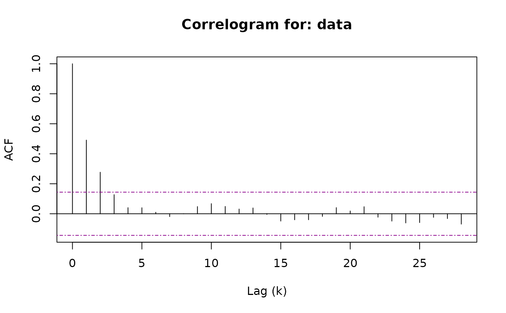
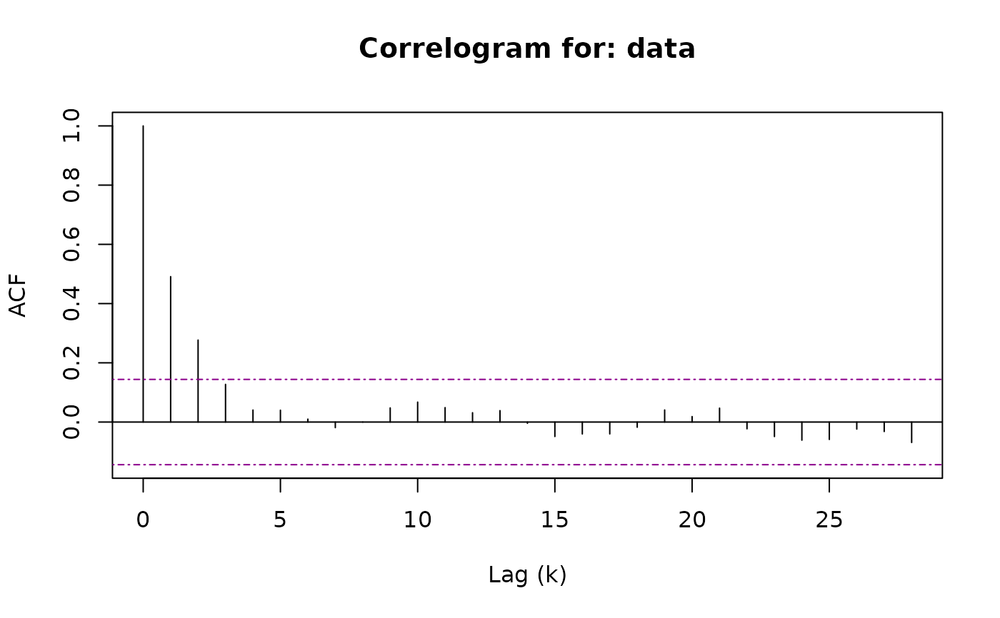

Politis and White (2004) Spectral Density "PWSD" Automatic Block-Length Selection
Source:R/pwsd.R
pwsd.RdRun the Automatic Block-Length selection method proposed by Politis and White
(2004) and corrected in Patton, Politis, and White (2009). The method is
based on spectral density estimation via flat-top lag windows of Politis and
Romano (1995). This code was adapted from b.star to add
functionality and include correlogram support including an S3 method,
see Hayfield and Racine (2008).
Usage
pwsd(
data,
K_N = NULL,
M_max = NULL,
m_hat = NULL,
b_max = NULL,
c = NULL,
round = FALSE,
correlogram = TRUE
)Arguments
- data
an \(n x k\) data.frame, matrix, or vector (if \(k = 1\)) where the optimal block-length will be computed for each of the \(k\) columns.
- K_N
an integer value, the maximum lags for the auto-correlation, \(rho_k\), which to apply the implied hypothesis test. Defaults to
max(5, log(N)). See Politis and White (2004) footnote c.- M_max
an integer value, the upper-bound for the optimal number of lags, \(M\), to compute the auto-covariance for. See Theorem 3.3 (ii) of Politis and White (2004).
- m_hat
an integer value, if set to
NULL(the default), thenm_hatis estimated as the smallest integer after which the correlogram appears negligible forK_Nlags. In problematic cases, settingm_hatto an integer value can be used to override the estimation procedure.- b_max
a numeric value, the upper-bound for the optimal block-length. Defaults to
ceiling(min(3 * sqrt(n), n / 3))per Politis and White (2004).- c
a numeric value, the constant which acts as the significance level for the implied hypothesis test. Defaults to
qnorm(0.975)for a two-tailed 95% confidence level. Politis and White (2004) suggestc = 2.- round
a logical value, if set to
FALSEthen the final block-length output will not be rounded, the default. If set toTRUEthe final estimates for the optimal block-length will be rounded to whole numbers.- correlogram
a logical value, if set to
TRUEa plot of the correlogram (i.e. a plot of \(R(k)\) vs. \(k\)) will be output to the console. If set toFALSE, no interim plots will be output to the console, but may be plotted later using the corresponding S3 method, plot.pwsd.
References
Andrew Patton, Dimitris N. Politis & Halbert White (2009) Correction to "Automatic Block-Length Selection for the Dependent Bootstrap" by D. Politis and H. White, Econometric Review, 28:4, 372-375, DOI: doi:10.1080/07474930802459016
Dimitris N. Politis & Halbert White (2004) Automatic Block-Length Selection for the Dependent Bootstrap, Econometric Reviews, 23:1, 53-70, DOI: doi:10.1081/ETC-120028836
Politis, D.N. and Romano, J.P. (1995), Bias-Corrected Nonparametric Spectral Estimation. Journal of Time Series Analysis, 16: 67-103, DOI: doi:10.1111/j.1467-9892.1995.tb00223.x
Tristen Hayfield and Jeffrey S. Racine (2008). Nonparametric Econometrics: The np Package. Journal of Statistical Software 27(5). DOI: doi:10.18637/jss.v027.i05
Examples
# Generate AR(1) time series
sim <- stats::arima.sim(list(order = c(1, 0, 0), ar = 0.5),
n = 500, innov = rnorm(500))
# Calculate optimal block length for series
pwsd(sim, round = TRUE)
 #> $BlockLength
#> b_Stationary b_Circular
#> data 8 9
#>
#> $Acf
#> $Acf$data
#>
#> Autocorrelations of series ‘data[, i]’, by lag
#>
#> 0 1 2 3 4 5 6 7 8 9 10
#> 1.000 0.491 0.277 0.127 0.041 0.040 0.010 -0.019 0.000 0.048 0.067
#> 11 12 13 14 15 16 17 18 19 20 21
#> 0.049 0.032 0.039 -0.004 -0.049 -0.040 -0.040 -0.018 0.041 0.019 0.047
#> 22 23 24 25 26 27 28
#> -0.023 -0.049 -0.061 -0.059 -0.024 -0.032 -0.069
#>
#>
#> $parameters
#> n k c K_N M_max b_max m_hat M rho_k_critical
#> [1,] 500 1 1.959964 5 28 68 2 4 0.1439999
#>
#> $Call
#> pwsd(data = sim, round = TRUE)
#>
#> attr(,"class")
#> [1] "pwsd"
# Use S3 Method
b <- pwsd(sim, round = TRUE, correlogram = FALSE)
plot(b)

#> $BlockLength
#> b_Stationary b_Circular
#> data 8 9
#>
#> $Acf
#> $Acf$data
#>
#> Autocorrelations of series ‘data[, i]’, by lag
#>
#> 0 1 2 3 4 5 6 7 8 9 10
#> 1.000 0.491 0.277 0.127 0.041 0.040 0.010 -0.019 0.000 0.048 0.067
#> 11 12 13 14 15 16 17 18 19 20 21
#> 0.049 0.032 0.039 -0.004 -0.049 -0.040 -0.040 -0.018 0.041 0.019 0.047
#> 22 23 24 25 26 27 28
#> -0.023 -0.049 -0.061 -0.059 -0.024 -0.032 -0.069
#>
#>
#> $parameters
#> n k c K_N M_max b_max m_hat M rho_k_critical
#> [1,] 500 1 1.959964 5 28 68 2 4 0.1439999
#>
#> $Call
#> pwsd(data = sim, round = TRUE)
#>
#> attr(,"class")
#> [1] "pwsd"
# Use S3 Method
b <- pwsd(sim, round = TRUE, correlogram = FALSE)
plot(b)
